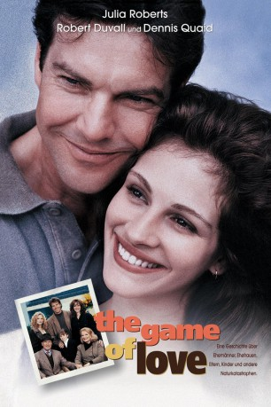
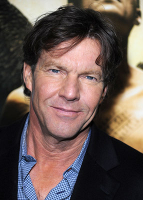
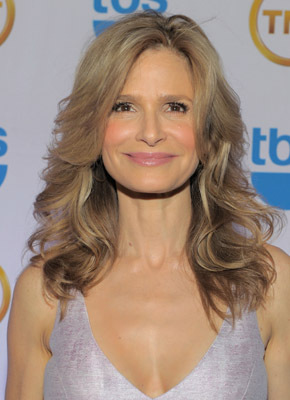
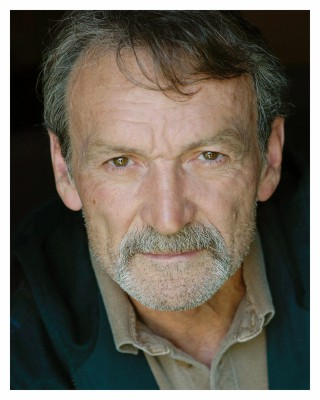
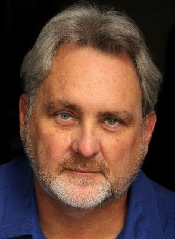

#6404 Power of Love
Alternativ: Something to Talk About
 
 IMDB-Wertung: 5.7 / 10
IMDB-Wertung: 5.7 / 10  Metascore: 0
Metascore: 0 
Grace ist eine glücklich verheiratete Frau. Doch dann entdeckt sie zufällig, daß ihr Mann Eddie eine Affäre hat und reicht geschockt die Scheidung ein. Ihre Mutter Georgia ist damit gar nicht einverstanden, sie würde Eddie noch eine Chance geben. Grace ist empört und wirft ihrer Mutter Feigheit vor - aus dem gleichen Grund hätte sie schon die vielen Seitensprünge ihres Mannes Wyly übersehen. Aber dann sieht Grace ein, daß auch sie in ihrer Ehe Fehler gemacht hat und sie nimmt Eddies Dinner-Einladung an.
Jahr: 1995
Dauer: 100 Minuten
FSK: 6
Land: USA Studio: Warner Bros.Tonspuren: DD5.1 - ,
Untertitel:
Auflösung: 1080p (1920x1080) Größe: 6625 MB
Genre: Drama, Komödie, Liebe
Regisseur: Lasse Hallström
Drehbuch: Callie Khouri
Soundtrack:
Darsteller:
 Julia Roberts als Grace King Bichon
Julia Roberts als Grace King Bichon-  Dennis Quaid als Eddie Bichon
 Robert Duvall als Wyly King
Robert Duvall als Wyly King Gena Rowlands als Georgia King
Gena Rowlands als Georgia King-  Kyra Sedgwick als Emma Rae King
 Brett Cullen als Jamie Johnson
Brett Cullen als Jamie Johnson-  Muse Watson als Hank Corrigan
- Terrence Currier als Dr. Frank Lewis
- Rebecca Koon als Barbaranelle
 Rhoda Griffis als Edna
Rhoda Griffis als Edna Lisa Roberts Gillan als Kitty
Lisa Roberts Gillan als Kitty Amy Parrish als Lucy
Amy Parrish als Lucy- Helen Baldwin als Mary Jane
-  Beau Holden als Frank
- Shannon Eubanks als Jessie Gaines
- Marilea Butler als Rider , uncredited
 David Huddleston als Jack 'Mad Dog' Pierce , uncredited
David Huddleston als Jack 'Mad Dog' Pierce , uncredited- Haley Aull als Caroline 'Doodlebug' Bichon
- Anne Shropshire als Aunt Rae
- Ginnie Randall als Eula
- Deborah Hobart als Lorene Tuttle
- Libby Whittemore als Nadine
- Punky Leonard als Norma Leggett
- Michael Flippo als Sonny
- Noreen Reardon als June
- Bennie L. Jenkins als Dub
- Rusty Hendrickson als Harry
- J. Don Ferguson als Announcer
- Mary Nell Santacroce als Mrs. Pinkerton
- Jamye Price als Anne
- Brinley Arden Vickers als College Friend
- Kirk Bair als Waiter , uncredited
- Andrew Lepper als Veterinary School Student , uncredited
Datei: X:\1995\Power of Love (1995, FSK6, 1920x1080).mkv seit 20.06.2017
Festplatte: HD 1992-1995
 Es gibt insgesamt 85 Filme in der Gruppe '1995'
Es gibt insgesamt 85 Filme in der Gruppe '1995'